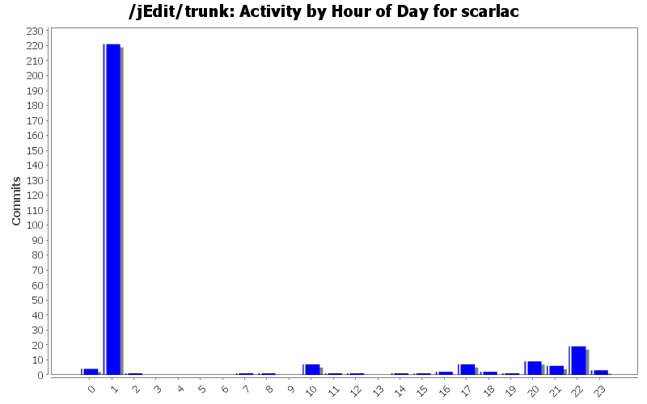
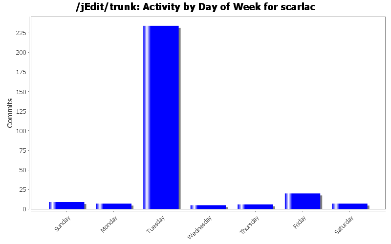
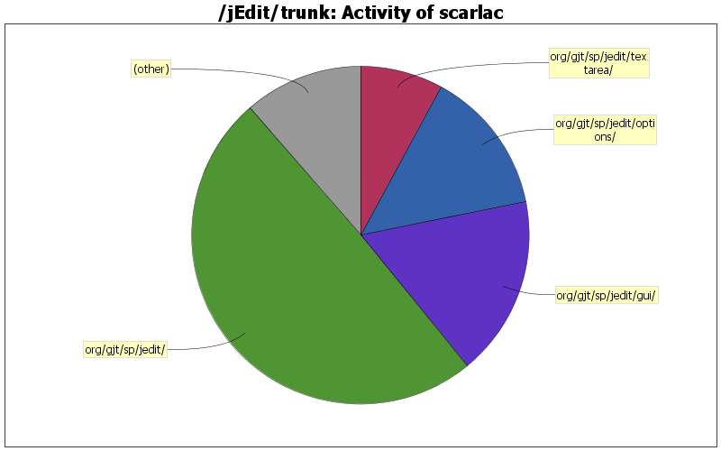

Key mappings was incorrect. Now uses correct detection. Fixes #2959723
0 lines of code changed in 1 file:
if anyone dislikes the change they should know who to blame
1 lines of code changed in 1 file:
scrolling should not occur beyond content (can happen with a track pad)
4 lines of code changed in 1 file:
* added changes to changelog and my name in the credits list
10 lines of code changed in 1 file:
* Mac settings are now stored in $HOME/Library/jEdit. Old settings are migrated to new location automagicly.
* Scrolling pages is now done with shift plus ctrl
45 lines of code changed in 2 files:
* icon path should match, not just filename. fixes #2045733.
1 lines of code changed in 1 file:
* enable support for horizontal scrolling through shift+scroll (#2308694)
* dropped support for page-scrolling with shift key
35 lines of code changed in 1 file:
Removed symlinking due to Apple update causing problems with symlinks. Fixes #2127295
0 lines of code changed in 1 file:
OS X specific code. Should be placed in a plugin (which it is - the plugin will be available later on)
0 lines of code changed in 1 file:
* new splash screen
* new about screen
31 lines of code changed in 4 files:
* new icon in help as well
0 lines of code changed in 1 file:
+ added entry about new image for splash screen and about dialog. changes may though still be made to the actual images as discussed on the dev list.
3 lines of code changed in 1 file:
+ new splash screen
+ new about dialog with
0 lines of code changed in 3 files:
* new gradient on mac icon as well
0 lines of code changed in 1 file:
app icon changed to new gradient style
0 lines of code changed in 1 file:
changed logo gradient tint slighty
0 lines of code changed in 4 files:
global icon changes for win installer and main app icon
0 lines of code changed in 4 files:
properly sized close icon for document close action and view-close action as well
13 lines of code changed in 2 files:
added myself to the credits list (seph soliman)
1 lines of code changed in 1 file:
updated changelog with new icon
2 lines of code changed in 1 file:
(16 more)